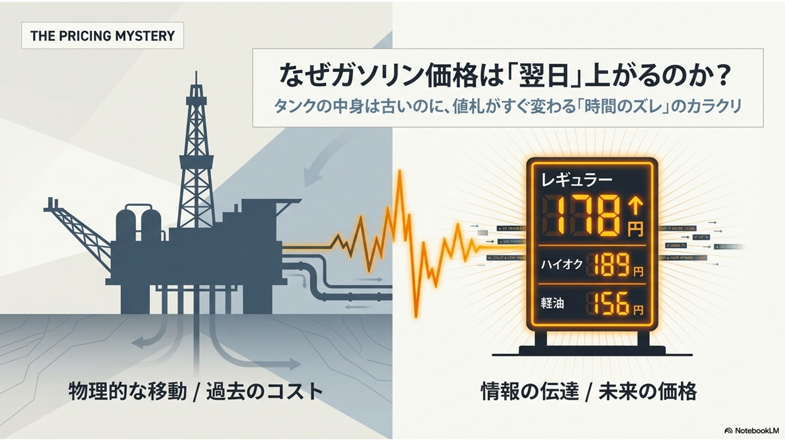
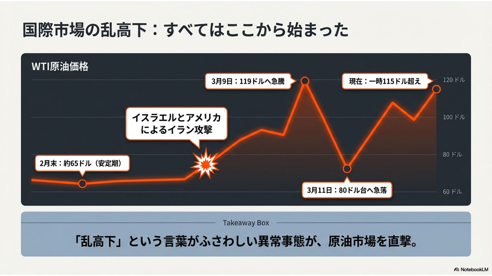
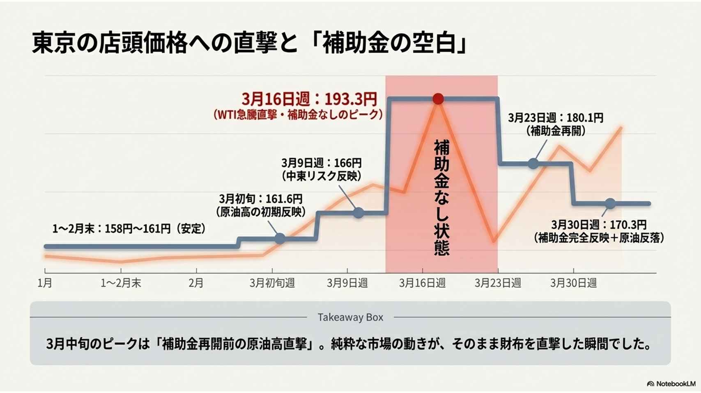
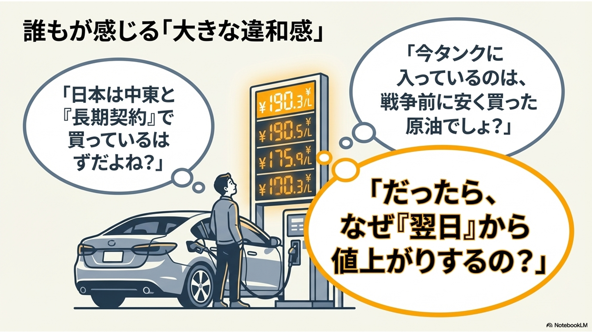
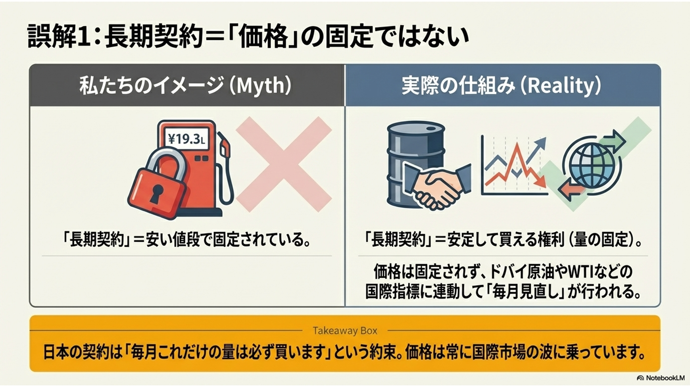
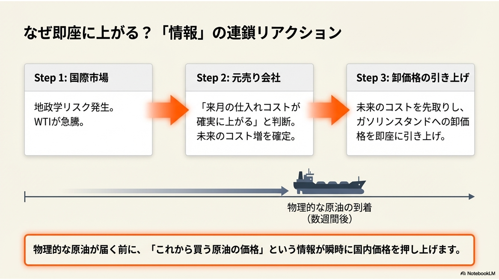
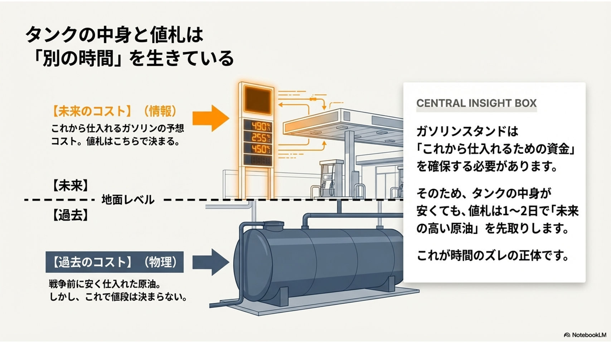
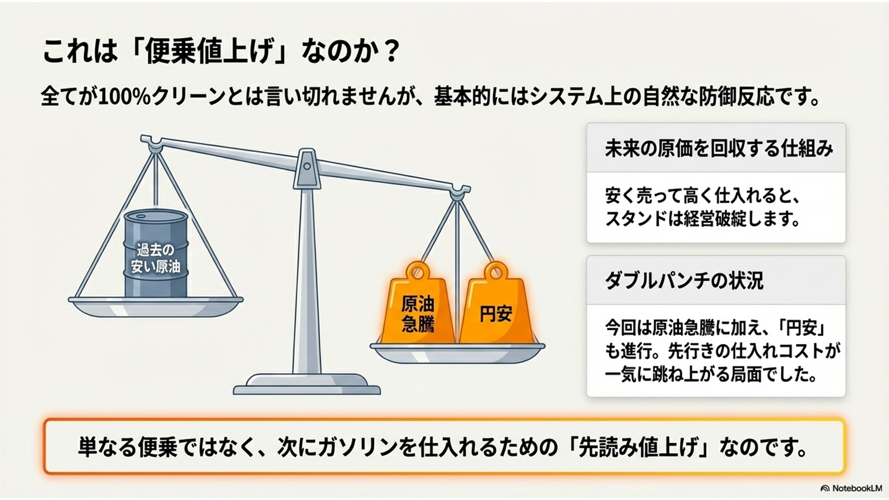
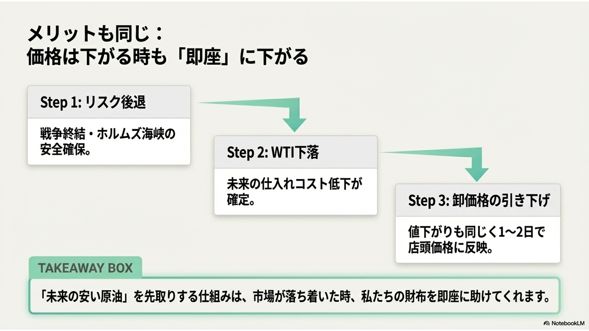
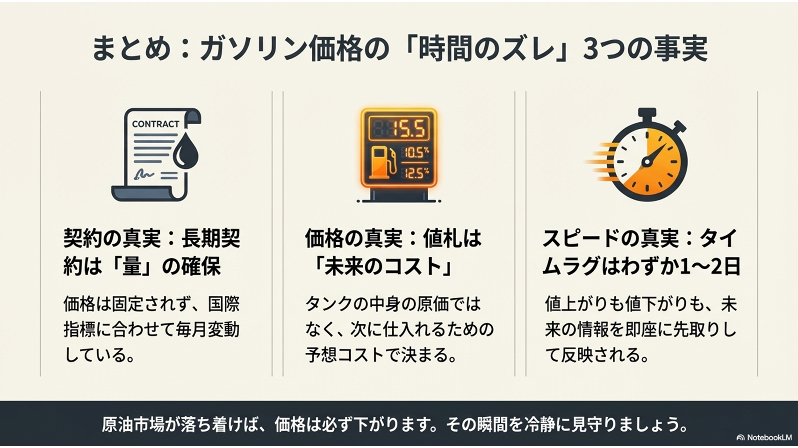

ガソリン価格の謎の全体像 ガソリンスタンドのタンクの中身は古いままなのに、なぜ価格が「翌日」にすぐ上がるのかという疑問に対し、物理的な原油の移動（過去のコスト）と、情報伝達による値札の変化（未来の価格）の間に生じる「時間のズレ」がそのカラクリであることを提示しています 。

国際市場の乱高下 すべての発端となる原油市場の異常事態を解説しています。イスラエルとアメリカによるイラン攻撃などの影響により、WTI原油価格が数日の間に119ドルへ急騰したのち80ドル台へ急落するなど、激しく乱高下している事実を示しています 。

店頭価格への直撃と「補助金の空白」国際市場の動きが、実際の東京のガソリン価格にどう影響したかを示しています。特に3月中旬、国の補助金が再開する前の「空白期間」に原油高が直撃したことで、一時的に193.3円まで価格が跳ね上がった様子を解説しています 。

消費者の抱く「大きな違和感」消費者が価格変動に対して感じる素朴な疑問を代弁しています。「日本は中東と長期契約を結んでいるはず」「今のタンクのガソリンは戦争前に安く買ったもののはず」なのになぜ即座に値上がりするのか、という直感と現実のギャップを提示しています 。

誤解の解消（長期契約の真実）先ほどの違和感に対する回答として、「長期契約＝価格が固定されている」という誤解を解き明かしています。日本の契約はあくまで「毎月決まった量を買う権利（量の固定）」であり、価格自体は国際市場の指標に連動して毎月変動していることを説明しています 。

「情報」による連鎖リアクションなぜ原油が届く前に価格が即座に上がるのか、その仕組みを3つのステップで解説しています。国際市場での地政学リスク発生を受け、元売り会社が「未来の仕入れコスト増」を確定させ、物理的な原油の到着を待たずに卸価格を即座に引き上げるという情報の連鎖を示しています 。

値札は「未来のコスト」を反映している地下のタンクにある原油（過去の物理的なコスト）と、地上の看板（未来の情報のコスト）が**「別の時間」を生きている**ことを図解しています。ガソリンスタンドは「次にガソリンを仕入れるための資金」を確保する必要があるため、未来の高い原油価格を1〜2日で先取りして値札に反映させていると解説しています 。

「便乗値上げ」という批判への反論即日の値上げが単なる「便乗値上げ」ではなく、「次に仕入れるための先読み値上げ」というシステム上の防御反応であることを説明しています。安く売って高く買い直すと経営破綻してしまうためであり、今回は原油急騰と円安の「ダブルパンチ」が事態を悪化させていることを指摘しています 。

下がる時も「即座」に下がるというメリット未来のコストを先取りするこの仕組みは、価格が下落する際にも消費者にとってメリットになることを示しています。戦争の終結などでリスクが後退してWTIが下落すれば、やはり1〜2日で卸価格が引き下げられ、店頭価格にも即座に反映されることを説明しています 。

まとめと結論 これまでの「時間のズレ」のカラクリを、**「契約の真実（量の確保）」「価格の真実（値札は未来のコスト）」「スピードの真実（1〜2日ですぐ反映）」**の3つのポイントにまとめています。原油市場が落ち着けば必ず価格は下がるため、その瞬間を冷静に見守るべきだと結論づけています 。